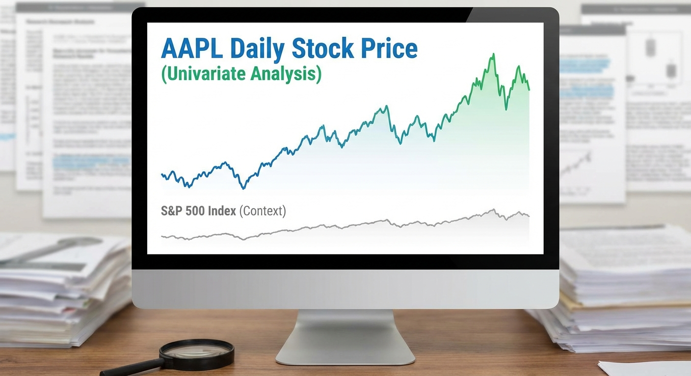

Topic 1
Basic Stock Price Time Series (S&P 500)
Easy

Topic 1 – Basic Stock Price Time Series (S&P 500)
Level: Easy Goal: Univariate forecasting of daily stock prices (close price) for one S&P 500 company.Dataset
- Source: S&P 500 stock data – Kaggle
- Link: https://www.kaggle.com/datasets/camnugent/sandp500
Download Instructions
- Open https://www.kaggle.com/datasets/camnugent/sandp500
- Log in to Kaggle.
- Click "Download".
- Extract ZIP to
data/. - Use
all_stocks_5yr.csv.
Data Loading
import pandas as pd
df = pd.read_csv("data/all_stocks_5yr.csv")
aapl = df[df["Name"] == "AAPL"].copy()
aapl["date"] = pd.to_datetime(aapl["date"])
aapl = aapl.set_index("date").sort_index()Implementation Steps
1. Data Exploration
- Load the dataset and select a company (e.g., AAPL, MSFT, GOOGL)
- Visualize the time series (close price over time)
- Check for missing values and handle them appropriately
- Examine basic statistics (mean, std, min, max)
2. Exploratory Data Analysis (EDA)
- Plot time series with trend lines
- Perform time series decomposition (trend, seasonality, residual)
- Calculate and visualize ACF/PACF plots
- Check for stationarity using visual inspection and ADF test
3. Data Preprocessing
- Handle missing values (forward fill, interpolation, or removal)
- If non-stationary, apply differencing (1st or 2nd order)
- Split data into train/validation/test sets (temporal split)
4. Model Building
- ARIMA Models:
- Use ACF/PACF to identify initial (p, d, q) parameters
- Try multiple ARIMA configurations
- Use AIC/BIC for model selection
- SARIMA Models (if seasonality exists):
- Identify seasonal patterns
- Fit SARIMA models with seasonal components
5. Model Evaluation
- Generate forecasts on validation/test sets
- Calculate metrics: MAE, RMSE, MAPE
- Visualize actual vs predicted values
- Analyze residual diagnostics (ACF of residuals, normality tests)
6. Forecasting
- Generate future forecasts (e.g., next 30 days)
- Include confidence intervals
- Visualize forecasts with historical data
Expected Deliverables
- EDA Report:
- Time series plots
- Decomposition plots
- ACF/PACF plots
- Stationarity test results
- Model Results:
- Best model parameters (p, d, q)
- Model diagnostics
- Forecast accuracy metrics
- Forecast plots with confidence intervals
- Code:
- Well-documented Python notebook
- Functions for data loading, preprocessing, modeling, and evaluation
Tips
- Start with a well-known stock (AAPL, MSFT) for easier interpretation
- Stock prices are typically non-stationary; differencing is usually required
- Consider log transformation to stabilize variance
- Use walk-forward validation for time series cross-validation
- Compare multiple models and select the best based on validation performance
Starter Notebook
The starter notebook contains installation instructions and data loading code to help you get started with this topic.
Note: You can view the notebook directly on GitHub or download it to run locally in Jupyter.
Getting Started
This topic includes:
- README.md - Detailed implementation guide (this page)
- starter.ipynb - Jupyter notebook with installation and data loading code
- Featured image - Visual representation of the topic
Navigate to the Topic/1.SP_500/ directory to access all resources.